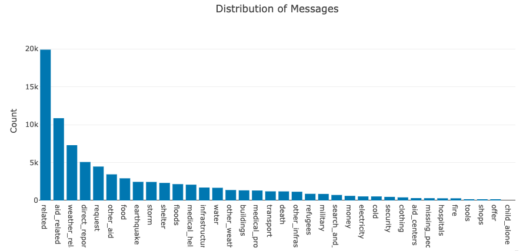
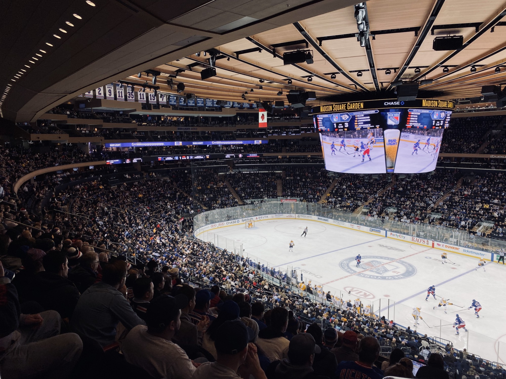

Pablo Wolter
Blog
Blog
Github
LinkedIn
Blog
Categories
All
(4)
Analytics
(3)
Data Science
(2)
ML
(1)
NLP
(1)
Spark
(1)
Order By
Default
Title
Date - Oldest
Date - Newest
Author
Archive
Pablo Wolter
Churn prediction using Spark
Spark
ML
Analytics
May 9, 2020
Pablo Wolter

Disaster Response Pipeline
Data Science
Analytics
NLP
Mar 9, 2020
Pablo Wolter

Analyzing a decade of NHL Hockey
Data Science
Analytics
Seasons from 2010 to 2019
Feb 11, 2020
Pablo Wolter
No matching items